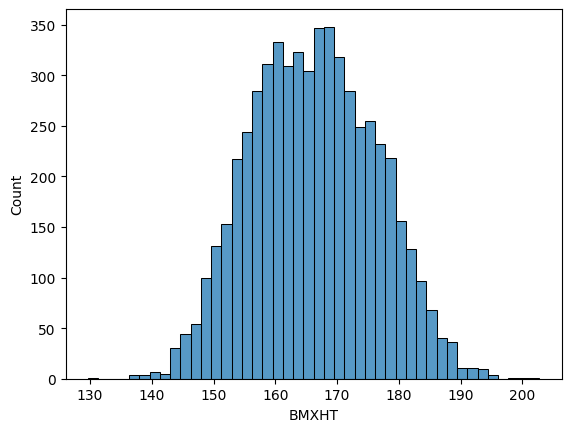
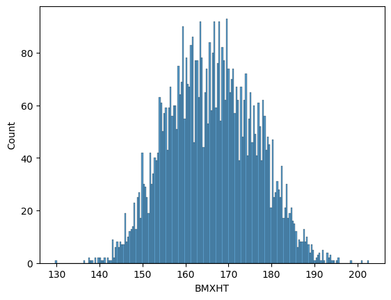
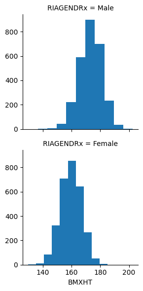
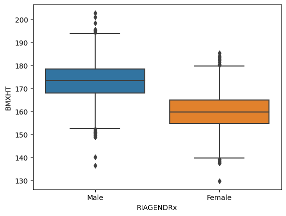
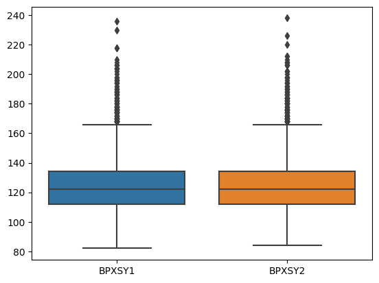

11Practice notebook for univariate analysis using NHANES data
This notebook will give you the opportunity to perform some univariate analyses on your own using the NHANES. These analyses are similar to what was done in the week 2 NHANES case study notebook.
You can enter your code into the cells that say “enter your code here”, and you can type responses to the questions into the cells that say “Type Markdown and Latex”.
Note that most of the code that you will need to write below is very similar to code that appears in the case study notebook. You will need to edit code from that notebook in small ways to adapt it to the prompts below.
To get started, we will use the same module imports and read the data in the same way as we did in the case study:
%matplotlib inlineimport matplotlib.pyplot as pltimport seaborn as snsimport pandas as pdimport statsmodels.api as smimport numpy as npda = pd.read_csv("../data/nhanes_2015_2016.csv")da.head()
SEQN
ALQ101
ALQ110
ALQ130
SMQ020
RIAGENDR
RIDAGEYR
RIDRETH1
DMDCITZN
DMDEDUC2
...
BPXSY2
BPXDI2
BMXWT
BMXHT
BMXBMI
BMXLEG
BMXARML
BMXARMC
BMXWAIST
HIQ210
0
83732
1.0
NaN
1.0
1
1
62
3
1.0
5.0
...
124.0
64.0
94.8
184.5
27.8
43.3
43.6
35.9
101.1
2.0
1
83733
1.0
NaN
6.0
1
1
53
3
2.0
3.0
...
140.0
88.0
90.4
171.4
30.8
38.0
40.0
33.2
107.9
NaN
2
83734
1.0
NaN
NaN
1
1
78
3
1.0
3.0
...
132.0
44.0
83.4
170.1
28.8
35.6
37.0
31.0
116.5
2.0
3
83735
2.0
1.0
1.0
2
2
56
3
1.0
5.0
...
134.0
68.0
109.8
160.9
42.4
38.5
37.7
38.3
110.1
2.0
4
83736
2.0
1.0
1.0
2
2
42
4
1.0
4.0
...
114.0
54.0
55.2
164.9
20.3
37.4
36.0
27.2
80.4
2.0
5 rows × 28 columns
11.1 Question 1
Relabel the marital status variable DMDMARTL to have brief but informative character labels. Then construct a frequency table of these values for all people, then for women only, and for men only. Then construct these three frequency tables using only people whose age is between 30 and 40.
Married 48.474281
Never married 17.506539
Divorced 10.095902
Living with partner 9.189189
Widowed 6.904969
Missing 4.551003
Separated 3.243243
Refused 0.034874
Name: DMDMARTLx, dtype: float64
#freq table for women onlyx = da[da['RIAGENDR']==2]['DMDMARTLx'].value_counts()x / x.sum()*100
Married 43.783602
Never married 17.473118
Divorced 11.760753
Widowed 9.946237
Living with partner 8.803763
Missing 4.233871
Separated 3.965054
Refused 0.033602
Name: DMDMARTLx, dtype: float64
#freq table for male onlyx = da[da['RIAGENDR']==1]['DMDMARTLx'].value_counts()x / x.sum()*100
Married 53.533889
Never married 17.542588
Living with partner 9.604929
Divorced 8.300109
Missing 4.893077
Widowed 3.624502
Separated 2.464661
Refused 0.036245
Name: DMDMARTLx, dtype: float64
#freq table for all people, age 30-40age30_40 = da[(da['RIDAGEYR'] >=30) & (da['RIDAGEYR'] <=40)]x = age30_40['DMDMARTLx'].value_counts()x / x.sum()*100
Married 54.580897
Never married 21.150097
Living with partner 13.937622
Divorced 6.822612
Separated 2.923977
Widowed 0.487329
Refused 0.097466
Name: DMDMARTLx, dtype: float64
#freq table for females, age 30-40x = age30_40[age30_40['RIAGENDR']==2]['DMDMARTLx'].value_counts()x / x.sum()*100
Married 53.571429
Never married 21.804511
Living with partner 12.218045
Divorced 8.646617
Separated 3.383459
Widowed 0.375940
Name: DMDMARTLx, dtype: float64
#freq table for males, age 30-40x = age30_40[age30_40['RIAGENDR']==1]['DMDMARTLx'].value_counts()x / x.sum()*100
Married 55.668016
Never married 20.445344
Living with partner 15.789474
Divorced 4.858300
Separated 2.429150
Widowed 0.607287
Refused 0.202429
Name: DMDMARTLx, dtype: float64
Q1a. Briefly comment on some of the differences that you observe between the distribution of marital status between women and men, for people of all ages.
There are less married women and that seems to be due to more women being divorced
Q1b. Briefly comment on the differences that you observe between the distribution of marital status states for women between the overall population, and for women between the ages of 30 and 40.
More women between 30-40 are married compared to the whole population and this group as less rates of widowed women
Q1c. Repeat part b for the men.
More man in their 30-4o live with a partner
11.2 Question 2
Restricting to the female population, stratify the subjects into age bands no wider than ten years, and construct the distribution of marital status within each age band. Within each age band, present the distribution in terms of proportions that must sum to 1.
Q2a. Comment on the trends that you see in this series of marginal distributions.
We see an increase in: divorce over age groups We see a decrease in the proportion of females living with a partner + women never married There is a big spike in marriages (up to 50%) from age group 18-30 to 30-40 and then a slow decline The largest group of widowed women is in the oldest age group
Q2c. Comment on any notable differences that you see when comparing these results for females and for males.
Increase in divorce over time Decrease of males living with a partner and males that never married Largest increase in married males in group 30-40 and then slow decrease (but not to levels as for females) Separated relatively constant Largest increase in widowed men in the last group (but small compared to females)
11.3 Question 3
Construct a histogram of the distribution of heights using the BMXHT variable in the NHANES sample.
sns.histplot(da.BMXHT)plt.show()

Q3a. Use the bins argument to distplot to produce histograms with different numbers of bins. Assess whether the default value for this argument gives a meaningful result, and comment on what happens as the number of bins grows excessively large or excessively small.
sns.histplot(da.BMXHT, bins =200)plt.show()

The value looks good
Q3b. Make separate histograms for the heights of women and men, then make a side-by-side boxplot showing the heights of women and men.
g = sns.FacetGrid(da, row ='RIAGENDRx')g = g.map(plt.hist, "BMXHT")plt.show()

sns.boxplot(y = da['BMXHT'], x = da['RIAGENDRx'])plt.show()

Q3c. Comment on what features, if any are not represented clearly in the boxplots, and what features, if any, are easier to see in the boxplots than in the histograms.
Males are larger than females (we can see this in both plots, however the median is easier to see in the boxplot). There are outliers on both ends (clearer in the boxplot)
11.4 Question 4
Make a boxplot showing the distribution of within-subject differences between the first and second systolic blood pressure measurents (BPXSY1 and BPXSY2).
sns.boxplot(da[['BPXSY1', 'BPXSY2']])plt.show()

Q4a. What proportion of the subjects have a lower SBP on the second reading compared to the first?
# insert your code here
Q4b. Make side-by-side boxplots of the two systolic blood pressure variables.
Q4c. Comment on the variation within either the first or second systolic blood pressure measurements, and the variation in the within-subject differences between the first and second systolic blood pressure measurements.
11.5 Question 5
Construct a frequency table of household sizes for people within each educational attainment category (the relevant variable is DMDEDUC2). Convert the frequencies to proportions.
Q5a. Comment on any major differences among the distributions.
Q5b. Restrict the sample to people between 30 and 40 years of age. Then calculate the median household size for women and men within each level of educational attainment.
The participants can be clustered into “maked variance units” (MVU) based on every combination of the variables SDMVSTRA and SDMVPSU. Calculate the mean age (RIDAGEYR), height (BMXHT), and BMI (BMXBMI) for each gender (RIAGENDR), within each MVU, and report the ratio between the largest and smallest mean (e.g. for height) across the MVUs.
Q6a. Comment on the extent to which mean age, height, and BMI vary among the MVUs.
Q6b. Calculate the inter-quartile range (IQR) for age, height, and BMI for each gender and each MVU. Report the ratio between the largest and smalles IQR across the MVUs.
# insert your code here
Q6c. Comment on the extent to which the IQR for age, height, and BMI vary among the MVUs.